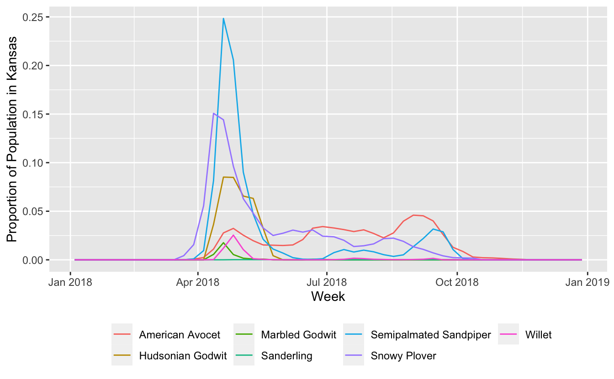
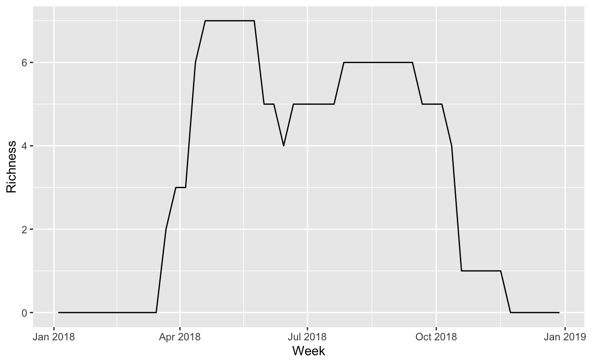

Lesson 3 Multi-species Trajectories
3.1 Objective
To prepare data for comparing Status and Trends results across multiple species. As an example, we’ll compute proportion of population trajectories for a suite of species.
3.2 Introduction
Comparing Status and Trends results between species requires extra caution because the models give relative rather than absolute abundance. For example, species differ in their detectability, and this may cause in differences in relative abundance. To address this, we’ll convert relative abundance to a proportion of population metric for each species by dividing the abundance layer by the total abundance summed across the entire range. For any given cell, this gives the proportion of relative abundance occurring in that cell. In addition, in this lesson we’ll look at the temporal dimension of these data, plotting trajectories through time for a given region.
Let’s start by loading the necessary packages for this lesson.
library(ebirdst)
library(raster)
library(sf)
library(rnaturalearth)
library(tidyverse)
library(parallel)
extract <- raster::extractFor this example, we’ll be looking at a suite of shorebird species in Kansas, so let’s also get a boundary polygon for that state.
3.3 Multi-species data
We begin by downloading data for a suite of 7 shorebird species that all spend at least a portion of the year within Kansas.
3.4 Proportion of population
Our goal is to produce trajectories comparing the proportion of each species’ population within Kansas for each week of 2018. For each species we need to:
- Calculate the sum of the abundance within Kansas for each week
- Calculate the sum of the abundance across the entire range of the species for each week
- Calculate the proportion of the population as the ratio of the within Kansas abundance to the total abundance
The below function performs these steps for a given species. Iterating over the full set of species is fairly computationally intensive, taking about 20 minutes on a laptop.
calculate_trajectory <- function(x, common_name, region) {
message(names(x))
# load and project weekly abundance
abd <- load_raster("abundance", path = x)
r <- st_transform(region, crs = st_crs(abd))
# total abundance within region
abd_region <- abd %>%
crop(r) %>%
extract(r, fun = sum)
abd_region <- abd_region[1, , drop = TRUE]
# calculate total range-wide abundance
abd_total <- mclapply(seq.int(nlayers(abd)),
function(i) cellStats(abd[[i]], sum),
mc.preschedule = TRUE, mc.set.seed = TRUE,
mc.cores = detectCores()) %>%
unlist()
data.frame(common_name = common_name,
date = parse_raster_dates(abd),
prop_pop = abd_region / abd_total,
row.names = NULL)
}
trajectories <- map2_dfr(sp_dirs, names(sp_dirs),
calculate_trajectory,
region = ks)
write_csv(trajectories, "data/shorebird_pop-trajectories.csv")3.5 Trajectories
Now we can plot these trajectories for the set of shorebird species.
ggplot(trajectories, aes(date, prop_pop, color = common_name)) +
geom_line() +
labs(x = "Week",
y = "Proportion of Population in Kansas",
color = NULL) +
theme(legend.position = "bottom")
3.6 Richness
Finally, we can combine these 7 trajectories into a single trajectory giving an estimate of the richness of this group of shorebirds throughout the year.
richness <- trajectories %>%
group_by(date) %>%
summarise(n_species = n_distinct(common_name[prop_pop != 0]))
# plot richness
ggplot(richness, aes(date, n_species)) +
geom_line() +
labs(x = "Week", y = "Richness")